O BITCOIN |
|---|
Entenda o que é a Bitcoin, a moeda virtual que vale mais de US$ 200. BITCOIN
Saiba como gerar o 'dinheiro virtual' e conheça suas vantagens e desvantagens
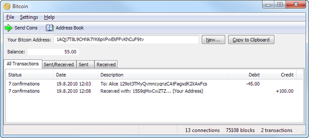
BITCOINPares de chaves As carteiras bitcoin utilizam criptografia de chave pública, na qual duas chaves criptográficas, uma pública e uma privada, são geradas. A chave privada é responsável pelo acesso dos fundos da carteira, enquanto que a chave pública pode ser espalhada para receber fundos. Ao fazer transações nos aplicativos de carteira usados no dia-a-dia, o usuário precisa apenas informar o endereço destinatário, pois o endereço remetente e sua chave privada já estão armazenados no dispositivo do usuário.
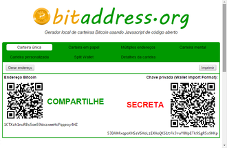
BITCOINPosse A posse de bitcoins implica que um usuário tem a habilidade de gastar as criptomoedas associados a um endereço específico. Para fazer isso, o comprador deve assinar digitalmente a transação usando a chave privada correspondente ao seu endereço. Não é possível assinar uma transação (e gastar bitcoins) sem que se conheça anteriormente a chave privada do endereço. A rede verifica a assinatura usando uma chave pública. Se a chave privada for perdida, a rede bitcoin não irá reconhecer nenhuma outra evidência de posse; e as bitcoins vinculadas ao endereço tornar-se-ão inutilizáveis, ou seja, serão efetivamente perdidas. BITCOINImplementação de referência O primeiro software de carteira se chama Bitcoin Core e foi lançado em 2009 por Satoshi Nakamoto, o possível inventor do Bitcoin. Ele é um software de código-aberto, e originalmente se chamava bitcoind. Às vezes chamado de "cliente Satoshi", também é conhecido como o cliente de referência para implementações, pois serve para definir o protocolo bitcoin atuando como padrão.Na versão 0.5, o cliente deixou de usar o toolkit de interface de usuário wxWidgets e passou a usar o software Qt, e o novo pacote passou a ser conhecido como Bitcoin-Qt.Após o lançamento da versão 0.9, o Bitcoin-Qt mudou de nome e passou a ser chamado de Bitcoin Core. Oferta Atualmente, o minerador que descobre um novo bloco recebe como recompensa bitcoins novos (recém-criados) e as taxas das transações incluídas naquele bloco. Desde 28 de novembro de 2012,a recompensa inclui 25 bitcoins novos (recém-criados) a cada bloco adicionado à cadeia de blocos (blockchain). Para poder resgatar sua recompensa, uma transação especial chamada de coinbase é incluída pelo minerador junto com os pagamentos que ele processou. :ch. 8 Todos os bitcoins em circulação podem ser rastreados retrogradamente até as suas respectivas transações coinbase. O protocolo bitcoin especifica que a recompensa a cada bloco adicionado será diminuída pela metade a cada quatro anos, em média. Em vista disso, estima-se que no ano de 2140, quando o limite arbitrário de 21 milhões de bitcoins produzidos será atingido, a recompensa será removida completamente e, a partir de então, os mineradores receberão apenas as taxas das transações do bloco como recompensa pelo seu trabalho. Mineração (geração de bitcoins) A rede Bitcoin cria e distribui um novo lote de bitcoins aproximadamente 6 vezes por hora aleatoriamente entre participantes que estão rodando o programa de mineração de criptomoedas. onde qualquer participante minerador tem chance de ganhar um lote. O ato de gerar bitcoins é comumente chamado de "minerar" (em referência a "mineração do ouro"). A probabilidade de um certo minerador ganhar um lote depende do poder de processamento computacional com que ele contribui para a rede Bitcoin em relação aos outros.A quantia de bitcoins geradas por lote nunca passa de 50 BTC, e esse valor está programado no protocolo bitcoin para diminuir com o passar do tempo, de modo que o total de bitcoins criadas nunca ultrapasse 21 milhões de unidades BTC. Com a redução desse prêmio, espera-se que a motivação para se rodar nó gerador (computador executando um programa de mineração) mudará para o recebimento de taxas de transação. No caso do Bitcoin, o algoritmo utilizado no emprego do sistema de prova-de-trabalho é o SHA-256. Todos os nós mineradores da rede disputam para ser o primeiro a achar uma solução do desafio criptográfico envolvendo seu bloco candidato na blockchain, um problema que requer poder computacional e repetidas tentativas para ser resolvido. Quando um nó encontra tal solução criptográfica, anuncia aos demais nós da rede e reivindica um prêmio em bitcoins. Ao receber um bloco recém resolvido, validam-no e o adicionam na cadeia de blocos do blockchain. Os nós usam suas CPU com o cliente padrão, e clientes de terceiros são capazes também de utilizar GPU. Mineradores também podem se juntar em grupos de mineração (conhecidos como "pools" em inglês) e minerar coletivamente. Existem empresas como por exemplo a HashCoinBrasil que oferece cotas de mineração. Ou seja, o interessado adquire uma ou mais cotas por um valor especifico e possuindo essa cota tem o direito do lucro obtido da mineração com o grupo todo, um exemplo de mineração coletiva. Para que a rede gere um bloco novo a cada 10 minutos em média, cada nó separadamente reajusta o nível de dificuldade do criptodesafio a cada duas semanas em resposta a mudanças no poder de processamento coletivo da rede. Atualmente, a mineração de bitcoins é uma área altamente competitiva, com hardware especializado vendido no mercado. Com a crescente dificuldade dos desafios criptográficos, tornou-se economicamente inviável utilizar CPUs para a mineração (pois a energia elétrica consumida custa mais que a recompensa em bitcoins gerada), e futuramente também as GPUs tornar-se-ão completamente obsoletas para esse propósito. Por este motivo, vários mineradores passaram a utilizar também circuitos integrados de aplicação específica (ASIC) para a mineração de bitcoins. Algumas empresas comercializam sistemas ASIC prontos para a mineração, com preços entre 250 e 2500 dólares. Taxas de transação Os usuários de bitcoins opcionalmente podem pagar uma pequena taxa em cada transação. Isso fará com que a transação seja processada com maior prioridade pelos mineradores, aumentando a probabilidade de ela ser incluída mais rapidamente na block chain. Os mineradores têm a capacidade de escolher quais transações eles irão processar, e geralmente priorizam aquelas que pagam as maiores taxas. As taxas são baseadas no tamanho de armazenamento da transação gerada, que por sua vez depende do número de inputs usados para criar a transação, e não no valor que está sendo transmitido. Além disso, transações com inputs não-gastos mais antigos também recebem prioridade. As taxas de transação são um dos incentivos para que os mineradores executem "nós" mineradores, especialmente quando a dificuldade de gerar moedas crescer ou o tamanho da recompensa por resolver um bloco diminuir com o tempo. "Nós" mineradores coletam as taxas de transação associadas a todas as transações incluídas em seu bloco candidato. Fungibilidade A fungibilidade diz que um bem ou commodity pode ser substituídos por outros da mesma espécie, de mesma qualidade ou de mesma quantidade sem perda de valor. As carteiras e demais softwares administram os bitcoins de maneira equivalente, estabelecendo um nível básico de fungibilidade. Isto é, uma unidade de bitcoin é considerado igual a outro bitcoin quanto ao preço e aceitação. O lingote de ouro tem fungibilidade de acordo com o grau de pureza. O papel do governo tem fungibilidade desde que as não tenham sido marcadas ou não tenham os números da série adicionados na lista negra. No entanto pode gerar uma barreira, quando o usuário preocupa-se com a origem da criptomoeda. Como o histórico de transações de cada bitcoin e disponível publicamente, alguns usuários recusam-se a aceitar bitcoins oriundos de transações controversas ou fraudulentas (por exemplo, pagamento de sequestro) o que poderia ser prejudicial para a fungibilidade do bitcoin. Projetos como: Zerocoin, CoinJoin, Dark Wallet e SendShared, buscam resolver as questões de privacidade e fungibilidade. Economia Bitcoin é uma das primeiras implementações do conceito criptomoeda descentralizada, descrito originalmente em 1998 por Wei Dai na lista de discussões Cypherpunk. Embora tenha apenas formato digital, não deixa de ser considerada um ativo, no sentido econômico do termo, que são os bens, valores, créditos, direitos de um patrimônio em um determinado momento. A economia de Bitcoin ainda é pequena comparada ao sistema financeiro tradicional e o software oficial ainda está no estágio beta. Entretanto, em diversas partes do mundo serviços e bens reais (como músicas, eletrônicos, veículos, hospedagens, restaurantes e desenvolvimento de software) já estão sendo negociadas com esta moeda. Sendo aceito tanto para serviços online quanto para bens tangíveis. Atualmente muitas organizações e associações aceitam doações em bitcoins, podemos citar a Electronic Frontier Foundation, Free Software Foundation, Wikimedia Foundation, Mozilla Foundation, Internet Archive, Freenet, The Pirate Bay, WikiLeaks e Singularity Institute. As multinacionais Microsoft, Dell, Time Inc., Dish Network, Virgin Galactic e Reddit, entre outros, aceitam pagamentos em bitcoin. Paypal anunciou em setembro de 2014 que pretende aceitá-las. Muitos negociantes fazem câmbio entre dinheiro nacional/fiat (como Dólares, Euros, Rublos, Yens, Real, entre outras) e bitcoins através de sites de câmbio. Qualquer usuário pode verificar diretamente o blockchain e observar as transações quase em tempo real, com monitoramento de diversos websites. Compra e Venda Bitcoins podem ser comprados e vendidos tanto online como offline. Os usuários de serviços de câmbio online realizam lances de compra e venda. O uso de um serviço de câmbio online implica certo risco, estando sujeitos à falência, ou ataques de hackers que furtam os bitcoins de clientes que estiverem sob sua custódia. Mas existem registros da ocorrência de ambas as situações. Existem terminais de auto-atendimento para saque de bitcoins (ATM), que permitem a troca de dinheiro em espécie por bitcoins e vice-versa. O serviço mais popular que fornece a localização mundial de ATMs é disponibilidado pela Coindesk. Uma evolução muito esperada pela comunidade é o advento do câmbio descentralizado trustless, ou seja, que não requer confiança entre as partes transacionando. Há duas iniciativas em estágio avançado de desenvolvimento, mas ainda não disponíveis: bitsquare.io: software livre que possibilita câmbio P2P com a presença de um árbitro mediador com reputação conhecida. Coinffeine: startup que promete câmbio P2P sem necessidade de árbitro, mediante depósito em garantia maior que o valor das parcelas em que o câmbio é dividido.
Diferenças monetárias
Ao contrário das moedas normais/fiat, Bitcoin se destaca por suas propriedades tecnológicas superiores e neutralidade da rede, nenhum administrador ou programador pode controlar a emissão (causar inflação e deflação) de bitcoins devido a sua natureza descentralizada, suavizando possíveis instabilidades financeiras causadas por políticas econômicas de bancos centrais como na crise econômica de Chipre. Ao contrário dos bancos centrais, o sistema blockchain implementa um conjunto de regras que governam a rede Bitcoin. As regras são determinadas pela governança de código aberto. Estas regras são escritas pelos programadores em protocolos de código aberto auditável por todos, mas eles não são auto-executáveis. Para que as regras tenham validade é necessário criar um consenso social onde pelo menos 51% dos usuários (carteiras bitcoin) devem aceitar as regras, mas estas regras podem ser reescritas e alteradas a qualquer momento, se houver um consenso na comunidade de que as regras devem ser alteradas. Existe uma inflação programada no protocolo Bitcoin que ajusta a emissão de novas moedas, porém, por ser um código aberto totalmente auditável, a inflação é previsível e de conhecimento público.A emissão de novas moedas bitcoins portanto não pode ser manipulada ou ofuscada para alterar o poder de compra dos usuários. No entanto, grandes movimentos especulativos de oferta e demanda podem fazer com que o seu valor sofra oscilação no mercado de câmbio. As transações de bitcoin são processadas dentro da rede peer-to-peer sem a necessidade de um processador financeiro como intermediário entre os participantes da rede. As transações entre as criptomoedas não tem intermediário, portanto, estornos são impossíveis. A carteira bitcoin transmite transações para os nós da rede que continuam a propagação da informação sobre o pagamento pelo resto da rede. Transações corrompidas ou inválidas são rejeitadas por nós da rede. Transações são praticamente gratuitas, exceto pela pequena taxa opcional de transação que serve para dar prioridade ao processamento.A conversão de moedas fiduciárias para bitcoin e vice-versa é feito em sites de câmbio bitcoin. O número total de bitcoins gerados tende a 21 milhões com o passar do tempo. O suprimento de bitcoins cresce como uma progressão geométrica de 4 em 4 anos; metade do suprimento total vai ter sido minerada em 2013, e 3/4 terão sido mineradas em 2017. Chegando perto desse ponto o valor de bitcoins provavelmente começará sofrer deflação de preço (aumento no valor real) devido a escassez de moedas no mercado (maior demanda e menor oferta) e redução de moedas mineradas. No entanto, Bitcoins são divisíveis por pelo menos 8 casas decimais (disponibilizando um total de 2.1 x 1015 unidades), removendo limitações práticas em ajustes para baixo no preço bitcoin em um ambiente inflacionário (redução do poder de compra). Ao invés de depender do incentivo de mineração para criar novas bitcoins, espera-se que nós mineradores durante esse período contarão com sua habilidade de coletar taxas de transação.
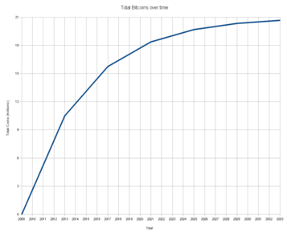
BITCOINMarket cap As criptomoedas não possuem um market cap/valor de mercado, da mesma maneira que o ouro ou as moedas nacionais/fiat. Nomear o valor total de bitcoins muda a função original da criptomoeda. Originalmente, foi planejado a ser uma rede de pagamentos descentralizada que usa a unidade de conta bitcoin, talvez sem a intenção de interagir com moedas emitidas por governos. O bitcoin, como uma unidade de conta, possui atributos semelhantes a uma moeda. Este pode ser divisível, possui fungibilidade limitada e direitos de propriedade, que o fazem teoricamente uma boa reserva de valor. Assim os desenvolvedores estão criando novos protocolos com o objetivo de oferecer produtos financeiros mais complexos em plataformas também confiáveis em paralelo com a blockchain. Resultados Hipóteses de falha para bitcoin incluem: vulnerabilidades ainda não descobertas no protocolo, desvalorização da moeda devido a queda da demanda, repressão por uma autoridade financeira global. Os sites de câmbio bitcoin podem sofrer repressão por um governo local. No entanto, provavelmente seria impossível "banir todas as criptomoedas em todo o mundo". A descentralização, a internacionalização e o anonimato incorporadas em bitcoin parece ser uma reação aos processos contra companhias de moedas digitais centralizadas como E-gold e Liberty Dollar. Num artigo investigativo o Times irlandês, Danny O'Brien relatou "Quando eu mostro essa economia bitcoin pras pessoas, elas perguntam: 'Isso é legal?' Perguntam: 'É um golpe?' Eu imagino que tem vários advogados e economistas por aí se esforçando pra tentar responder essas perguntas. Eu suspeito que a gente poderá incluir legisladores nessa lista em breve." Em fevereiro de 2011, a cobertura por Slashdot e o subsequente efeito Slashdot afetaram o valor de bitcoin e a disponibilidade de alguns dos sites relacionados. Regulação Nos EUA os investidores e mineiros de criptomoedas poderão cobrir esses ativos voláteis através da empresa LedgerX, licenciada pela Comissão de Negociação de Futuros de Comódites dos EUA (CFTC). LedgerX, que opera uma plataforma de negociação de criptomoedas, recebeu o registro de bolsa e câmara de compensação para contratos de derivativos e estratégia de hedge com moedas digitais. LedgerX, financiada pelo setor de capital de risco da Alphabet e regulada pelo governo dos EUA, planeja oferecer aos investidores institucionais contratos de conversões de bitcoins para dólares com prazo de um a seis meses e também proteções de longo prazo contra as oscilações de preço (volatilidade) de modo semelhante a outros ativos. O blockchain é um livro público de transações, apesar de ter algumas informações anônimas — o bitcoin está associado a um número que somente seu proprietário conhece — basta uma conversão para um câmbio não virtual que tudo fica às claras. Algumas tentativas do setor privado de validar as moedas com os reguladores estão condenadas ao fracasso, porque a Bitcoin é uma rede mundial com uma unidade monetária sem fronteiras. No nível jurisdicional, as economias que aceitam a validação de moedas erguem barreiras ao fluxo livre de capital digital e restringem os benefícios do crescimento induzidona região, semelhante à "lista negra". Cronologia Em 2008, Satoshi Nakamoto publicou um artigo científico na lista de discussão The Cryptography Mailing List descrevendo o protocolo bitcoin. Em 2009, a rede bitcoin começa a funcionar com o lançamento do primeiro cliente bitcoin open source e a emissão das primeiras bitcoins. 2010 O preço inicial das bitcoins foi definido por pessoas nos fóruns BitcoinTalk. As transações iniciais incluíam, por exemplo, a compra de uma pizza por 10 mil BTC. O site Mt.Gox, uma espécie de mercado de câmbio de bitcoin, começa a operar. No dia 6 de agosto, uma vulnerabilidade severa no protocolo do bitcoin foi descoberta. Transações não verificadas adequadamente eram incluídas no log de transações ("blockchain"). Aproveitando-se da falha, usuários podiam emitir para si mesmos quantidades ilimitadas de bitcoins, violando as restrições econômicas da moeda. No dia 15 de agosto houve o primeiro caso de usuários aproveitando-se da vulnerabilidade recém-descoberta. Mais de 184 bilhões de bitcoins foram gerados numa só transação e enviados a dois endereços distintos. Em poucas horas a vulnerabilidade foi corrigida com o lançamento de uma nova versão do protocolo; a transação adulterada, por sua vez, foi localizada e removida do log de transações. Este foi o único caso na história da bitcoin de uma grande falha de segurança exposta e utilizada para fraude. 2011–2012 Em junho de 2011, Wikileaks e outras organizações passam a aceitar bitcoins como forma de doação. Entre essas organizações estava inicialmente a Electronic Frontier Foundation, que pouco depois reverteu a decisão, alegando preocupações com a falta de precedentes legais da nova moeda. No fim de 2011, o preço da bitcoin despencou de US$ 30,00 para menos de US$ 2,00, evento que muitos consideram um "estouro de bolha". Alguns creem que a queda repentina deu-se por conta do crescente poder computacional e consequente redução de custo (de hardware e energia elétrica) para se produzir bitcoins (atividade denominada bitcoin mining). Em outubro de 2012, BitPay anunciou haver mais de 1000 comerciantes aceitando bitcoin como forma de pagamento. Em Novembro de 2012 o WordPress começou a aceitar transações com a moeda bitcoin. 2013 Fevereiro O sistema de pagamentos Coinbase anunciou ter vendido mais de US$ 1 milhão em forma de bitcoins em um só mês, com a cotação do bitcoin acima de US$ 22,00. O Internet Archive anunciou que passaria a aceitar bitcoins como forma de doação; além disso, passaria também a oferecer aos seus funcionários a chance de optar por receber parte de seus salários em bitcoins Março O log de transações ("blockchain") temporariamente dividiu-se em dois logs independentes governados por regras distintas. O site de câmbio de bitcoins Mt.Gox deixou de aceitar novos depósitos de bitcoins brevemente. Cotações de bitcoin caíram 23% para cerca de US$ 37,00, retornando ao patamar anterior (cerca de US$ 48,00) após algumas horas. Nos Estados Unidos, o Financial Crimes Enforcement Network (FinCEN) criou regulamentos para "moedas virtuais" tais como o bitcoin, enquadrando os mineradores de bitcoins do país numa categoria financeira específica ("Money Service Businesses", algo como "Negócios Financeiros") que pode estar sujeita a obrigações legais específicas do governo. OKcupid começou a aceitar transações com a moeda bitcoin. O , órgão do governo americano, emitiu um relatório sobre moedas virtuais centralizadas e distribuídas e seu status legal. Classificando as moedas digitais e outras formas de pagamentos e, eximiu os usuários americanos de bitcoin das obrigações legais referentes à moeda, por considerar que o bitcoin não é regulado pelo FinCEN, mas declarou ter autoridade regulatória sobre organizações que usem bitcoins como um meio de pagamento ou câmbio. Abril Clientes dos sites de pagamentos BitInstant e Mt.Gox sofreram com atrasos devido ao aumento de procura por bitcoins, com consequente aumento das cotações do mesmo. No dia 10, a cotação do bitcoin despencou de US$ 266 para US$ 105. Seis horas após a queda, a moeda recuperou parte de seu valor, ficando cotada a US$ 160. Agosto O Departamento de Finanças da Alemanha autorizou a utilização da moeda em transações financeiras privadas. Caso as empresas queiram utilizar o Bitcoin, deverão solicitar permissão da Autoridade de Supervisão Financeira Federal. O Bitcoin não será classificado como uma moeda real no país, mas sim como uma unidade de conta. Novembro Recorde. Em 17 de Novembro de 2013 a cotação do Bitcoin ultrapassou US$1216,7313. A valorização do Bitcoin ocorre devido à movimentação do mercado chinês no BTC China, que hoje ocupa o primeiro lugar entre os sites de câmbio Bitcoin, ocupando o lugar que era do MTGox. O volume de compra de Bitcoin já é o maior de todos os tempos, mas não é de surpreender, já que a China possui cerca de 1,351 bilhão de habitantes (2012). 2014 Abril A cotação foi registrado abaixo da metade do máximo registrado 5 meses antes. Críticas Críticas ao Bitcoin são uma constante desde o início de sua adoção, e o embasamento para as mesmas varia entre episódios reais, projeções de mercado e falhas de design. Entre os críticos de Bitcoin encontram-se ex-usuários, tecnólogos, economistas e políticos. Tecnologia Segurança Embora muitos considerem o Bitcoin uma moeda segura por causa de sua encriptação ponta-a-ponta, os riscos aos quais os usuários estão expostos fora da rede são o foco do problema. Uma vez que o acesso aos fundos de uma conta dependem unicamente da posse de uma chave secreta, os fundos de carteiras online podem ser hackeados, e os fundos de carteiras offline compartilham as mesmas inseguranças de dinheiro em espécie e obrigações ao portador (títulos de crédito). Em fevereiro de 2014, a empresa de câmbio Mt. Gox iniciou uma ação de falência na justiça japonesa 4 dias após seu site ficar offline por uma crise interna originada do roubo de mais de meio milhão de bitcoins dos seus clientes devido a uma falha de segurança. Além da possibilidade de roubo, os fundos podem simplesmente ser perdidos e se tornarem órfãos na ocasião em que o detentor da chave secreta perca sua posse (corrupção de memória, destruição ou extravio de chave física). Nesse caso, não haveria meios de reaver posse da chave e, por consequência, dos fundos. Irreversibilidade A natureza irreversível das transações em Bitcoin geram desconfiança e aumentam o seu fator de insegurança. Embora a velocidade da confirmação de uma transação sem taxação seja um ponto positivo, uma vez que os fundos transferidos para uma chave pública serão posse confirmada do detentor de sua chave secreta equivalente na próxima atualização da blockchain, no caso onde o pagador não recebe o bem pelo qual ele pagou, a transação não pode ser desfeita e o pagador é prejudicado. Outro caso em que a irreversibilidade é indesejável é no caso em que os valores da transação, como a quantidade de bitcoins e as chaves públicas envolvidas, estejam incorretos. Nesse caso, a quantidade de Bitcoins transferida pode ser superior à desejada, ou bitcoins podem ser transferidas para os fundos da chave pública (destinatário) incorreta. Soluções propostas são os serviços de garantias desenvolvidos na plataforma Bitcoin, mas o envolvimento de terceiras partes diminui a segurança ponta-a-ponta, e também é alvo de críticas. Escalabilidade O funcionamento da rede Bitcoin depende da ocorrência de um número bastante limitado de ações que diz respeito à criação de novos nós, fabricação de transações, mineração de moedas, prova de trabalho e estabelecimento de consenso. Porém, é uma visão crescente a de que a rede Bitcoin como originalmente implementada não é escalável. Na criação de novos nós, a cópia da blockchain, base de dados sempre crescente, é a principal etapa. Porém o crescimento da mesma tem superado o crescimento das taxas de transferência de dados e capacidade de armazenamento. Para frear esse crescimento, os blocos da mesma tiveram seu tamanho máximo limitado, o que também limita o número de transações por período (10 minutos). Embora isso não represente o fim imediato do Bitcoin, micropagamentos e transações isentas estão sendo cada vez menos processadas, eventualmente expirando. O debate entre o aumento ou manutenção do tamanho máximo do bloco de transações por período tem dividido a comunidade envolvida no projeto e gerado controvérsia.Aqueles que defendem o aumento, alegam que a manutenção está prejudicando a confiabilidade das transações feitas na rede, e os que defendem a manutenção, alegam que o aumento diminuiria o número de mineradores, gerando centralização da rede, além de não resolver o problema de escalabilidade do tamanho da blockchain. Os grupos que defendem cada um dos lados criaram versões concorrentes conhecidas como Bitcoin Core e Bitcoin Classic. Em março de 2013, um servidor bitcoin (também chamado de "minerador") rodando a versão mais recente do protocolo criou um registro grande demais no log de transação (também chamado "blockchain"), incompatível com versões anteriores do protocolo devido ao seu tamanho. Isso criou uma divisão no log de transações. Alguns usuários utilizavam a versão mais recente do protocolo, compatível com registros mais longos, enquanto outros usuários ainda utilizavam versões mais antigas do protocolo, não utilizando o log novo, grande demais. Essa bifurcação resultou na formação de dois logs diferentes sem um consenso de qual o log definitivo, o que permitiu que um mesmo valor de bitcoins, representado em dois logs distintos, fosse utilizado duas vezes. O site Mt.Gox temporariamente deixou de aceitar novos depósitos de bitcoins A cotação do bitcoin caiu 23% para US$ 37 no Mt.Gox, retornando à cotação anterior de US$ 48 após algum tempo. Desenvolvedores do bitcoin.org tentaram solucionar a divisão recomendando aos usuários que voltassem a usar uma versão anterior do protocolo, que utilizava a versão mais antiga do tronco comum de logs. Os fundos dos usuários, em grande parte, mantiveram-se inalterados e um consenso foi estabelecido em torno desta decisão. Centralização Um das principais diretivas do projeto Bitcoin é a descentralização. Porém críticas sobre determinados aspectos do Bitcoin dizem respeito a elementos de centralização no mesmo. Ainda que a arquitetura da rede maximize a descentralização nos nós, a necessidade de prova de trabalho garante uma influência maior aos nós com maior poder de processamento específico na etapa de mineração. Aliado ao uso em larga escala de ASICs pela nova geração de mineradores, apenas um seleto grupo de indivíduos controla a criação de novos blocos da Blockchain. Com o possível aumento do tamanho máximo do bloco proposto pela versão Bitcoin Core, essa centralização se tornaria ainda maior. Outra forma de centralização que é alvo de críticas ao projeto Bitcoin é o processo de tomada de decisões de design. Embora o processo para sugerir novas modificações a serem feitas no código seja aberto a qualquer um que queira contribuir, a escolha das medidas a serem adotadas é feito por um pequeno grupo de programadores, os quais não foram eleitos para tal função, nem são o(s) criador. Divisões (forks) Uma bifurcação ou ramificação (do inglês: fork) é uma divisão da rede Bitcoin, chamado de hardfork, que gera duas redes simultâneas (nova e antiga), devido algumas mudanças efetuadas na cadeia de blocos do banco blockchain.Existem dois tipos de forks: softfork e hardfork. Diferenças softfork e hardfork Os termos softfork e hardfork, são usados de acordo a escolha da comunidade em aceitar determinadas mudanças na cadeia de blocos ou no protocolo Bitcoin. Se a comunidade estiver dividida sobre tais mudanças, a versão antiga e a nova versão do Bitcoin podem virar projetos diferentes após debate. Softforks são implementações compatíveis com versões anteriores da rede Bitcoin e são apoiadas por consenso de toda a comunidade. Isto é, os nodos antigos do Bitcoin aceitarão receber blocos criados por nodos novos que estão seguindo o novo parâmetro aceito pela comunidade, pequenas mudanças no código original. Assim, todos os novos blocos são considerados válidos na nova versão além de também serem validados com os blocos da versão antiga. Hardforks ocorre quando existem metas divergentes dentro da comunidade do projeto inicial, onde dividem-se apoiando diferentes metas. Assim a comunidade menor copia a rede inicial e realiza modificações de alguns parâmetros ou adiciona funções, mudanças na regras do protocolo como um todo, que não são suportadas pela rede Bitcoin (como, novos recursos de segurança e diferentes esquemas de mineração) que posteriormente segue caminho independente usando uma cadeia de blocos paralela e duradoura (duas blockchain distintas), criando as criptomoedas alternativas do bitcoin, chamadas altcoins. Atualmente, existem quase 700 moedas digitais diferentes, as mais famosas são: Namecoin (NMC primeira bifurcação), Litecoin (Ł), Dogecoin (Ð), Bitcoin Cash (BCH) e, a mais atual Bitcoin Gold (BCG). Economia Instabilidade Economistas conservadores desaconselham a aplicação de fundos em Bitcoin como forma de investimento por causa de sua instabilidade. Embora crescimento instável possa ser regulado pela geração de interesse no investimento em bitcoins, um episódio de rápida desvalorização (estouro da bolha) poderia significar a total ou parcial perda de valor da criptomoeda causada por um episódio de panic selling. As consequências disso seriam milhares de investidores da criptomoeda perderem seus investimentos da noite para o dia, mesmo mantendo a posse de seus bitcoins.Entre aqueles que levantaram essa questão está o ex-presidente da Reserva Federal dos Estados Unidos, Ben Bernake, que acusou a criptomoeda de ser altamente volátil.Em 2013, foi registrado um crescimento de 80 vezes no valor em libras de 1 bitcoin entre o início do ano e seu mês de novembro. Porém em abril de 2014 o seu valor foi registrado abaixo da metade do máximo registrado 5 meses antes. Outro motivo que faz com que a instabilidade do Bitcoin gere desconfiança é que ser uma forma estável de armazenar valor é uma de duas funções que uma moeda precisa desempenhar para que ela seja bem sucedida, sendo a outra função a de servir como um meio de troca.Apenas em 10 meses a cotação em dólar de um bitcoin cresceu uma ordem de grandeza, passando de cerca de US$ 13/BTC para US$ 1000/BTC de janeiro à novembro. Especula-se que eventos globais como a crise financeira europeia - em particular a crise financeira do Chipre, além de declarações positivas do FinCEN dando maior respaldo legal à moeda, tenham motivado o recrudescimento da cotação.O valor de mercado do bitcoin - ou seja, a somatória de todas as moedas em circulação - atingiu a marca de 1 bilhão de dólares. Comentaristas do mercado financeiros suspeitam que os preços do bitcoin estejam passando por uma bolha econômica. No dia 10 de abril de 2013, a moeda bitcoin caiu, em seis horas, de um preço de U$ 266,00 para U$ 105,00, retornando ao valor de U$ 160,00 dentro de seis horas.Embora seu valor flutue mais do que outras moedas, esse movimento não é mais tão grande, ganhou certa estabilidade ao longo de seis meses, onde a volatilidade do preço do dólar de um bitcoin é de 4,23% e, em um ano foi de apenas 3,58%. Modelo Econômico Embora o modelo de soma total fixa tenha sido um dos principais motivos para muitos terem elogiado e adotado o Bitcoin, vendo nele o exemplo oposto do que é feito por alguns governos (com a impressão de moeda e consequente inflação), essa decisão de design resultou na diminuição da circulação da moeda, devido muitos que a adotaram, tinham a esperança de lucrar com o aumento de seu valor. Além disso, quando a criação de bitcoins cessar, sempre que uma chave secreta for perdida, ou alguém se utilizar da blockchain para fazer uma marca temporal, a soma total de bitcoins não-orfãs diminuirá, diminuindo essa soma na prática. De acordo com as normas do Banco Central Europeu, bitcoin não é considerado moeda eletrônica por não preencher alguns requisitos da diretiva que orienta as transações com e-money, a Electronic Money Directive (2009/110/EC). Para ser considerada moeda eletrônica, faz-se necessário que tenha a capacidade de ser armazenada eletronicamente, ser aceita como forma de pagamento por instituições diversas e, ser emitida com base na recepção de fundos em quantidade não inferior ao valor monetário emitido. As duas condições iniciais estão satisfeitas, ao contrário da última que conflita com a dinâmica de geração da moeda, denominada “mineração”, que mais se assemelha a uma competição matemática do que a uma operação financeira. Toda a rede é garantida e regulada através de criptografia. Utilização As diferentes maneiras nas quais você pode utilizar bitcoins ainda são limitadas, se comparadas ao dólar ou real. Isso vem do fato de que é necessário um nível mais alto de conhecimento técnico para que uma pessoa possa receber pagamentos no formato da criptomoeda.Uma vez que o número de clientes adeptos da moeda é pequeno para as grandes empresas, as mesmas tem mantido sua desconfiança com a aceitação da criptomoeda como forma de pagamento. Por falta de consolidação, Bitcoin tem encontrado dificuldades em ser amplamente utilizado no pagamento de serviços ou bens. Uma possível consequência disso é a redução da criptomoeda a uma moeda intermediária, ou a um possível investimento, na prática. Se for esse o caso, existe uma tendência de desvalorização. Especulação A escolha de um teto para o número total de bitcoins também é criticada pelo incentivo à especulação. Aqueles que adotaram a moeda precocemente fizeram parte de histórias de enriquecimento e serviram de exemplo para aqueles interessados em obter bitcoins à espera de valorização.Além disso, a moeda é deflacionária (devido à “orfanização” de bitcoins), e tem uma tendência permanente de crescimento. Por outro lado, a existência desse mercado especulativo forte representa um risco indesejado àqueles dispostos a adotar a moeda como meio de pagamento, uma vez que ela se tornou extremamente instável e pode sofrer grandes variações de valor entre uma transação e outra.Esse fato atrapalha a consolidação do Bitcoin como moeda, uma vez que quanto menos interesse houve em utilizá-la como meio de pagamento, menos pessoas e empresas se arriscarão a aceitá-la como meio de pagamento. Político O surgimento do Bitcoin iniciou um debate sobre a necessidade e a possibilidade de regulação de valores e transações. Embora algumas figuras políticas tenham demonstrado entusiasmo com a criptomoeda, outros defendem a necessidade de legislação regulatória, que pode focar nas transações a ocorrerem na rede, ou na criação de fundos de garantias de crédito para investidores da criptomoeda. Regulamentação A anonimidade proposital das transações que ocorrem na rede Bitcoin possibilita que a moeda seja utilizada como forma de pagamento em transações ilegais, como apostas e tráfico de drogas. Embora seja fácil o rastreio das chaves públicas a qual uma determinada quantia pertenceu desde a sua criação, o mesmo não se pode dizer da tarefa de associar tais chaves à identidade dos portadores dessas carteiras. Essa característica impossibilita a taxação de um grande número de transações por parte dos governos dos diferentes países pelos quais esse valor pode ter viajado.A necessidade de regulação não é defendida somente por legisladores, porém, mas também por aqueles que vêem na falta de regulação um motivo para não adotarem Bitcoin como uma moeda, uma vez que não existe nenhum órgão que ofereça garantia de valor mínimo àqueles dispostos a investir na moeda. Diferentemente do ouro, que tem como valor mínimo o de matéria-bruta para a produção de jóias, e do dólar, que tem o valor mínimo garantido pelo governo americano, o Bitcoin não possui garantias de valor. E um órgão regulador que cumprisse a função de garantidor de crédito é cogitado como a solução para esse problema. Em março de 2013, o Financial Crimes Enforcement Network (FinCEN), um órgão do governo americano, emitiu um relatório sobre moedas virtuais centralizadas e distribuídas e seu status legal. O relatório classificou moedas digitais e outras formas de pagamentos, inclusive o bitcoin, como "moedas virtuais" por estas não estarem sob autoridade de nenhum governo específico. O FinCEN eximiu os usuários americanos de bitcoin de quaisquer obrigações legais referentes à moeda, por considerar que o bitcoin não é regulado pelo FinCEN. No entanto, o órgão determinou que quaisquer partes que emitam moedas virtuais - o que inclui os "mineradores" de bitcoins - devem obeceder à legislação específica caso vendam sua moeda virtual em troca da moeda nacional.Além disso, o FinCEN declarou ter autoridade regulatória sobre organizações que usem bitcoins como um meio de pagamento ou câmbio.O corolário da decisão do FinCEN é a quebra de anonimidade do bitcoin. Por exemplo, em casos de atividade suspeita, os grandes sites de troca de bitcoin seriam obrigados a informar às autoridades dados sobre as negociações investigadas, da mesma maneira que instituições financeiras tradicionais têm de fazer. Em abril de 2017, o Japão criou a primeira legislação de regulamentação de divisas digitais, reconhecendo a criptomoeda, como forma de pagamento, e liberando a atividade das casas de câmbio,que chamou a atenção de novos investidores/compradores no país asiático, fazendo a cotação global ter uma super alta.A legislação possui o objetivo de aumentar a proteção de consumidores e empresas que usam as criptomoedas, evitando crimes de lavagem de dinheiro e outras atividades ilícitas.Em setembro de 2017 ocorreu uma audiência pública da Comissão Especial sobre Moedas Virtuais da Câmara dos Deputados, para debater sobre crimes no mercado de moedas virtuais,onde ocorreu a convocação de representantes do Ministério Público Federal que investigam as empresas MinerWorld e D9.Também foi debatida o Projeto de Lei 2 303/2015 que pretende enquadrar as moedas digitais na lei de Arranjos de Pagamentos sob supervisão do Banco Central, semelhantes aos cartões de crédito.Em outubro de 2017, Brasília sediará a BitConf, uma conferência sobre bitcoin, criptomoedas e Blockchain. Com administração do grupo da rede social facebook Bitcoin Brasil e da CoinPayments.net, aborda debates de aspectos econômicos, políticos, sociais e tecnológicos.A edição 2017 da conferencia conta com patrocínio de: exchange Bitcoin to You, Decred, SingularDTV, Ripio, Bitcoin.com, CryptoHWallet, Cryptonation, MarteXcoin, Rei do Coin, OriginalMy, Cripto Moedas Fácil, Kamoney, HashBrasil e Mister Money. Não-Regulamentação A arquitetura descentralizada do Bitcoin é uma escolha de design proposital com o objetivo de impossibilitar a regulação interna de seus mecanismos por um indivíduo ou instituição específica. Essa consequência foi atrativa para aqueles que viam com antipatia os episódios em que o governo de um país emitia cédulas e cedia crédito a grandes empresas com o propósito de evitar que as mesmas falissem, em detrimento do valor das reservas e salários da classe trabalhadora. Porém, a pressão feita pelas instituições governamentais pela existência de fiscalização e taxação podem diminuir o valor atrelado às bitcoins existentes. Entretanto, isso não é uma possibilidade por limitações tecnológicas em mudar a estrutura da rede, atualmente. Moral Em entrevista concedida ao portal online The Verge, Bill Gates desconsidera Bitcoin como uma opção para a população mais pobre, atualmente, devido a sua volatilidade, e ao custo para a contratação de serviços de garantia que preservem os fundos do pagador, caso o mesmo cometa um erro ao fazer um pagamento. Criminal Desafios à investigação criminal Além dos problemas e críticas em relação a sua capacidade como uma moeda funcional, o projeto também encontra dificuldade de aceitação por causa das possibilidades negativas. Onde todas as transações na rede são registradas com a identificação de nós pelos seus pseudônimos e, um usuário mal-intencionado pode utilizar da inexistência de registros de sua identidade na rede para fins ilícitos. O uso de bitcoins para o pagamento de transações no mercado negro (como a compra de drogas ilícitas, armas, etc.) tem sido uma prática cada vez mais comum. Além disso, devido à irrastreabilidade de transações, a rede tem sido usada em esquemas de lavagem de dinheiro e sonegação de impostos. Outra prática ilícita levantada pela Interpol é a utilização da Blockchain para espalhar conteúdo ilegal (como pornografia infantil) ou danoso (como malwares).Os relatórios emitidos pelo Banco Central Europeu (Virtual Currency Schemes – 2012), pelo Financial Crimes Enforcement Network do Departamento do Tesouro Nacional norte-americano (Application of FinCEN’s Regulation to Persons Administering, exchanging or Using Virtual Currencies – 2013) e pelo Federal Bureau of Investigation (Bitcoin Virtual Currency: Unique features Present Distinct Challenges for Deterring Illicity Activity – 2012) apresentam aspectos críticos associados à natureza conceitual e às transações envolvendo o Bitcoin. Nos Estados Unidos, qualquer instituição que ofereça serviço de câmbio ou de remessa de valores ao exterior deve estar registrada como Money Services Business (MSB) junto ao Financial Crimes Enforcement Network (FinCEN) e implementar o programa de prevenção à lavagem de capitais. No caso do bitcoin, o usuário final não é considerado MSB, não estando sujeito às regras do FinCEN. Porém, o administrador (o que adiciona e retira bitcoins de circulação) e o exchanger (o que realiza a conversão e troca entre a moeda virtual e a oficial) devem, no âmbito das fronteiras norte-americanas, submeter-se às normas da referida instituição, comprometendo-se, inclusive, a implementar o programa antilavagem de capitais. O bitcoin pode se tornar um atrativo às atividades criminosas na medida em que é valorizado ante moedas oficiais e é aceito como forma de pagamento em diversas transações onlines para compra de bens (roupas, jogos, músicas) e serviços (hotéis, restaurantes), em diversas partes do mundo. Por essa razão, e com base em fontes confiáveis o FBI classificou como alta, a probabilidade de cibercriminosos se apropriarem indevidamente de bitcoins alheios constantes em carteiras individuais ou de interferirem nos serviços de validação da transação, utilizando-se de malwares ou invasões a sistemas computacionais. O fato de não haver uma autoridade ou base de dados central, pois se trata de uma rede descentralizada e baseada em P2P, faz com que seja um grande desafio aos agentes da lei detectar atividades suspeitas, identificar usuários, obter registros das transações e, consequentemente, iniciar uma ação penal. A complexidade relativa à identificação do usuário pode ser mitigada pela possibilidade (facultativa) da publicação na block-chain do endereço IP de onde foi originada a transação, o que dependerá, também da forma como o usuário implementa sua carteira, utilizando-se ou não de recursos para tornar anônima sua posição. A incerteza legal relacionada ao bitcoin deixa seus usuários desprotegidos, além de constituir um atrativo para criminosos, com a intenção de se apropriar indevidamente de valores (os próprios bitcoins), lavar capitais, fraudar transações. Atividades suspeitas Junho 2011: O Silk Road comercializa drogas ilícitas, aceitando pagamento unicamente através de Bitcoins; Junho de 2011: O malware Infostealer.Coinbit foi considerado o primeiro destinado a furtar Bitcoins de carteiras individuais; Julho de 2011: ZeroAccess botnet; Outubro de 2011: Cibercriminoso oferece a venda do ZeuS botnet Trojan, aceitando pagamento em Bitcoins, Liberty Reserve ou WebMoney. Março de 2013: Mercado Bitcoin atacado com fatos ainda não esclarecidos bitcointalk.org. Fevereiro de 2014: Mt. Gox entra em colapso e suspende suas operações, suspeita-se de fraude interna e negligência, causando uma perda em 744,408 Bitcoins. Impacto afeta cotações em todo mercado de BitCoins. |
CURIOSIDADES E NOTÍCIAS |
|
João Bosco e Vinícius começam a vender shows em Bitcoin
Nos últimos anos o sertanejo universitário é um dos estilos que esta mais na moda e que vem tocando mais no Brasil, nada mais justo que cobrar um show de uma dupla de sertanejo universitário com a moeda virtual da moda, o Bitcoin.
Melhores carteiras Bitcoin | 2018
Uma coisa que todo dono de Bitcoin deve saber é que a segurança de seus Bitcoins é inteiramente de sua responsabilidade, portanto é sempre importante conhecer as melhores carteiras Bitcoin | 2018.
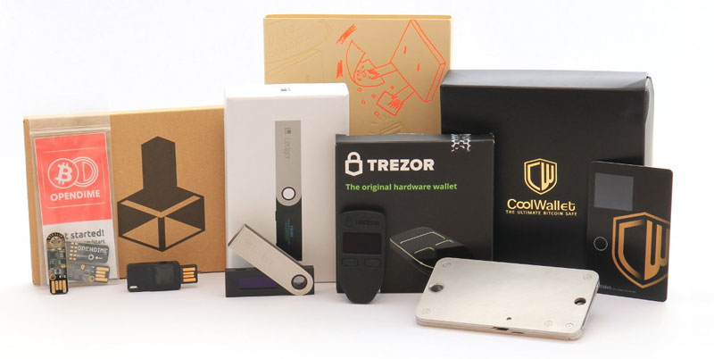
BITCOINA escolha perfeita para manter grandes quantidades de Bitcoins de muitas pessoas. As carteiras de hardware são fáceis de usar e portáteis. Todas essas opções Plug-and-Play oferecem aos usuários o controle completo de seus Bitcoins. Keepkey Os usuários do Keepkey terão que aprovar manualmente cada transação de saída no dispositivo KeepKey. As chaves privadas permanecem no dispositivo, que também é protegido por PIN caso ele caia nas mãos erradas. Trezor Um nome confiável e endossado por vários líderes da comunidade Bitcoin, o Trezor é pequeno e simples de usar. Possui segurança contra malwares e recuperação em caso de roubo ou perda. Ledger Nano A opção menor e mais econômica, o Ledger Nano com tamanho USD vem em algumas variações. Os usuários podem selecionar entre Ledger Nano ou Ledger Nano S. O último é a primeira carteira de hardware que também pode armazenar Ethereum (ETH / ETH), tornando-se o primeiro de seu tipo. Ethereum
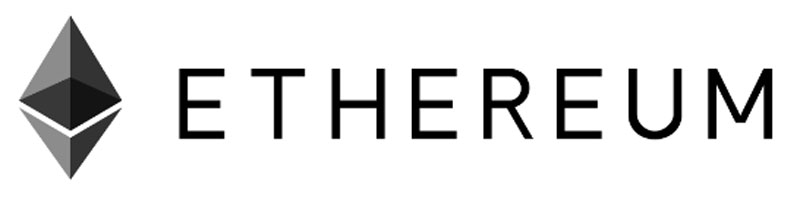
ETHERUMEthereum é uma criptomoeda com o mesmo funcionamento do Bitcoin, utiliza um sistema muito seguro e discreto chamado Blockchain. Este sistema é como se fosse um “livro-caixa” da rede onde ficam registradas todas e quaisquer transações que sejam feitas. O que é e como funciona o Blockchain Primeiramente para saber o que é e como funciona o Blockchain precisamos separar Bitcoins de Blockchain. Bitcoin é um “paper”, uma proposição de um sistema seguro de troca de valores (peer-to-peer) – P2P, proposto por alguém anônimo (ou um grupo de pessoas) sob o pseudônimo de Satoshi Nakamoto. Isto foi desenvolvido logo após a quebra do sistema imobiliário americano, em 2007 e que levou à “quebra” (falência) do Banco Lehman Brothers. O “paper” foi apresentado em 2008 e a “rede” Bitcoin foi lançada em 2009. O Bitcoin permite a transação financeira sem intermediários, mas verificadas por todos os nós da rede Bitcoin peer-to-peer, que são gravadas em um banco de dados distribuídos, chamado de Blockchain. Portanto, Bitcoin é o sistema de pagamentos e Blockchain é a tecnologia que o suporta. Toda a estrutura do Blockchain, embora inteiramente nova como conceito, utiliza tecnologias de TI conhecidas há 40 anos, é uma programação “open source”, disponível a todos. BLOCKCHAINBlockchain em português significa Cadeia de Blocos também conhecido como protocolo da confiança. O Blockchain surgiu junto com o Bitcoin, como seu código fonte original em 2008 e em 2009 o seu código foi lançado como código aberto, assim começa a rede Bitcoin e por sua vez o sistema Blockchain. Sendo base da tecnologia das moedas digitais o Blockchain foi despertando interesse de muitos outros setores como bancos, por exemplo, desde então muitas modificações foram feitas no código fonte Blockchain, com isso em 2014 surgiu um termo, Blockchain 2.0, para um novo projeto de bancos de dados distribuídos. Nesse novo projeto surgiu a Ethereum com uma linguagem de programação que permite que contratos inteligentes sejam feitos, essa sacada permitiu a formação de organizações descentralizadas. Blockchain é uma tecnologia que visa a descentralização como medida de segurança. São bases de registros e dados distribuídos e compartilhados que possuem a função de criar um índice global para todas as transações que ocorrem em um determinado mercado. BLOCKCHAINO Blockchain funciona como um livro-razão, só que de forma pública, compartilhado e universal, que cria consenso e confiança na comunicação direta entre duas partes, ou seja, sem o intermédio de terceiros. Está constantemente crescendo à medida que novos blocos completos são adicionados a ela por um novo conjunto de registros. Uma das aplicações mais famosas que utilizam o Blockchain é o próprio Bitcoin. Desta forma as transações da moeda ficam armazenadas neste “livro-razão”, contribuindo para a consistência das transações.Assim, torna-se impossível para o usuário utilizar o mesmo dinheiro para pagar por dois produtos. Além disso, por ser um processamento distribuído a moeda não tem necessidade de uma terceira-parte como um governo ou banco para validar as transações o que torna o processo como um todo mais rápido e barato. Blocos e transações O bloco gênese é codificado no software e serve como o estado inicial do sistema. Ele pode conter informações sobre as regras ou instruções sobre o banco de dados restante. Feito isto, o banco de dados é formado a partir de uma série de blocos que juntos formam uma cadeia. É deste ponto que surge o nome ‘cadeia de blocos’ (blockchain). Cada bloco na cadeia contém informação ou transações. À medida que se adicionam transações, sua informação é guardada no bloco de acordo com o momento que ela foi processada. Esta combinação de informação e tempo cria um livro-razão que documenta valor ou outros recursos no banco de dados. Após as transações serem empilhadas no bloco, uma assinatura ou “hash” é adicionada no final do bloco. O hash é “linkado” ao bloco anterior da cadeia. Estes hashes formam as ligações voltando entre as cadeias até chegar ao bloco gênese. O hash inclui o número do bloco atual e o número do próximo bloco da cadeia. Também inclui a data e o momento que foi assinado além da quantidade de transações inclusas no bloco presente. O hash apresenta-se como uma chave criptografada. As transações são irreversíveis. Dificuldade na adulteração de um bloco É praticamente impossível adulterar um bloco de transações já minerado, pois o falso minerador teria que dispor de força computacional maior que a soma de todos os recursos de hardware utilizados por milhares de mineradores de Bitcoins. Isso é tecnicamente possível, mas economicamente inviável, pois uma fraude dessa magnitude seria rapidamente identificada e causaria uma redução drástica no preço do Bitcoin, frustrando as expectativas do falso minerador. Enfim, o segredo do sucesso da tecnologia blockchain está na dificuldade de resolver uma prova trabalho para cada inclusão de um novo bloco de novas transações. Essa dificuldade de atualização da base Blockchain desestimula qualquer tentativa de adulteração de conteúdo, pois uma simples alteração de um byte em um bloco criado há uma semana implicaria na necessidade de modificar todos os blocos criados após esse bloco adulterado. Rede peer-to-peer BLOCKCHAINDe um modo geral e simples, uma rede P2P é uma arquitetura de computadores ou redes que compartilha tarefas, trabalho, ou arquivos entre pares (peers). Pares são parceiros na rede com iguais privilégios e influência no ambiente. Em uma rede P2P cada computador ou usuário é chamado de nó e coletivamente eles compõem uma rede P2P de nós. A rede P2P na Blockchain consiste de uma série de computadores e servidores onde cada um atua como um nó na rede. Quando uma nova mensagem entra na rede, a informação nesta mensagem é propagada entre todos os nós da rede P2P. A informação é normalmente encriptada e privada e não há como rastrear quem adicionou a informação na rede apenas verificar sua validade. Em 2013 um jovem de 21 anos chamado Vitalik Buterin achou que a tecnologia por trás da rede Blockchain poderia ser usada de uma forma mais inteligente, e então começou a desenvolver o que hoje conhecemos como Ethereum.A ETH financiado como um projeto de crowdfunding, sendo o terceiro maior projeto já financiado desta forma na história, e foi lançado em 30 de Julho de 2015. Qual a diferença entre o Ethereum e o Bitcoin A maior diferença do Ethereum para as outras moedas virtuais, como o Bitcoin, é que o Ethereum possui uma plataforma para a construção e distribuição descentralizada de aplicações. Simplificando, eles querem utilizar a tecnologia do Blockchain não só para a criptomoeda, mas sim para tudo aquilo que possa ser programado, fazendo com que o Ethereum seja um computador global. Vitalik Buterin, o criador do Ethereum, enfatizou que sua ideia foi alimentada pelo desejo de “ evitar o protocolo canivete suíço ”. Ou seja, que as soluções Blockchain específicas para o caso de uso estavam gastando esforços desnecessários na construção de uma infraestrutura equivalente. É aqui que o Ethereum entra em jogo. Com o Ethereum, Buterin criou a primeira aplicação universal dos princípios subjacentes ao Bitcoin. Em vez de usar o Blockchain como forma de estabelecer/fornecer valor, o Ethereum oferece a capacidade de usar essa tecnologia em um ambiente Turing-completo. Onde o Bitcoin implementa a tecnologia Blockchain em combinação com prova de trabalho para formar uma moeda, o valor do Ethereum é derivado da capacidade de criar aplicativos universais. Também vemos diferenças entre a forma como o Ethereum e o Bitcoin implementaram suas moedas descentralizadas. Mais notavelmente, o fornecimento de BTC tem um limite universal, enquanto o fornecimento de ETH é limitado anualmente em 18 milhões de ETH, mas não há limite estabelecido além disso. Futuro do Ethereum Os desenvolvedores da plataforma acreditam que por haver a chance de validar identidades e assinaturas digitais de forma segura através do Blockchain, o Ethereum poderá ser utilizado futuramente em em várias coisas como por exemplo: Transferência financeira; Títulos de propriedade; Dados de histórico de saúde; Votos; Impostos; Campanhas de arrecadação de dinheiro; etc. O Ethereum é uma moeda digital, que você encontra nas corretoras pela sigla “ETH”. Essas criptomoedas não são controladas ou regulamentadas por nenhum banco ou governo e sim pela própria rede de usuários. Carteiras de papel
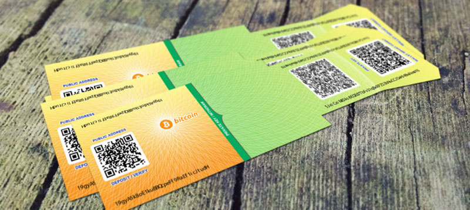
BITCOINAs carteiras de papel são seguras contra hackers, pois os Bitcoins estão “offline”. O problema, no entanto, é o armazenamento. O papel pode ser destruído, rasgado, ou perdido. Ao contrário das carteiras de hardware, não há mecanismo de recuperação para carteiras de papel,assim, os Bitcoins perdidos serão perdidos para sempre. Isso é algo que você precisa ter em mente se você quiser usar adquirir esta opção. BitcoinPaperWallet Os usuários podem imprimir carteiras de papel invioláveis com esses serviços para manter seus Bitcoins off-line. Oferecendo dicas, projetos e suprimentos de segurança adicionais, este site é um dos favoritos entre os defensores do armazenamento em frio para Bitcoin. BitAddress BitAddress.org é um serviço gratuito sem frescura que pode gerar carteiras de papel facilmente. Carteiras de Desktop
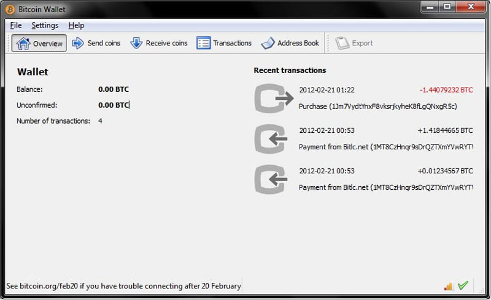
BITCOINAs carteiras de desktop oferecem um dos níveis de segurança mais altos em termos de armazenamento de Bitcoin. Você deve baixar o software para o seu computador e executar as transações, portanto, pode não ser prático para algumas pessoas. Esta opção pode ser técnica e confusa para iniciantes no Bitcoin. Bitcoin Core Usar este software significa ter controle sobre suas chaves públicas e privadas, o que garante um armazenamento seguro. No entanto, o Bitcoin Core também requer muito espaço à medida que o software vem com os dados de cada transação de Bitcoin já realizada. Em média você tem que ter no mínimo 64GB de espaço livre no seu computador. Multibit Com um pouco mais de 30MB de espaço no seu computador, o Multibit é uma carteira de Desktop mais leve. Muitas pessoas usam ela junto com a KeepKey, um dispositivo USB que exige sua confirmação manual antes que os Bitcoins possam ser processado. Armory Conhecida como “A única carteira de código aberto com armazenamento a frio e suporte multi-assinatura”, Armory é uma das opções populares para a carteira de Desktop. As chaves privadas são armazenadas em um computador off-line, o que significa que apenas alguém com acesso à localização física do computador(mantido em segredo) pode roubar seus Bitcoins. Carteiras Mobile
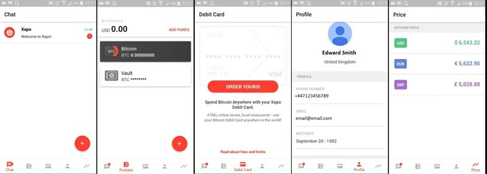
BITCOINAs carteiras mobile além de acessíveis e práticas, também incorporam outras camadas de segurança para garantir que os Bitcoins dos usuários não sejam comprometidos. É interessante manter apenas uma pequena quantidade de Bitcoins em carteiras mobile, mantendo o resto em opções mais seguras. Todas as opções abaixo estão disponíveis para usuários do Android e iOS. Mycelium Uma das mais seguras e recomendadas carteiras de Bitcoin do mundo, a Mycellium oferece segurança extra de diversas formas. Lembre-se sempre de efetuar o backup dela. Wirex O que diferencia o Wirex do resto é a sua facilidade de uso sem comprometer a segurança. Os usuários recebem carteiras de assinatura múltipla (‘multi-sig’) e podem ativar a autenticação em 2 fatores para o aplicativo e o endereço de e-mail vinculado ao Wirex, dificultando a invasão de terceiros. Xapo A Xapo é um sistema de carteira baseado na web, então tudo o que é necessário para acessa-lá é um browser e uma conexão à Internet. A Xapo é conhecida por ter recursos de segurança razoavelmente avançados, especialmente para uma carteira baseada na web. A empresa oferece suporte a pagamentos através de um sistema de cartão de débito, facilitando o acesso aos Bitcoins. O aplicativo também é amigável para iniciantes. Carteiras Online
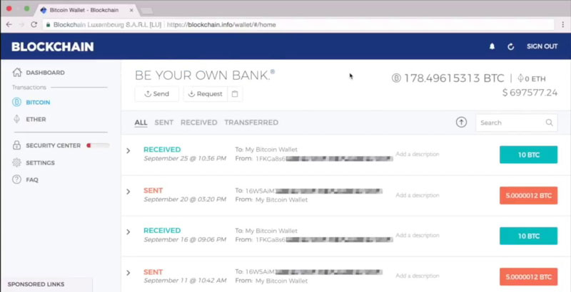
BITCOINAs carteiras de Bitcoin online são carteiras facilmente acessíveis na Web através de qualquer dispositivo, desde que possa ser conectado à Internet. É mais fácil e rápido fazer transações através de carteiras online devido à sua acessibilidade. O phishing, o malware, o hacking ou a simples falta de conhecimento de segurança digital tornam fácil para os hackers roubarem Bitcoins de carteiras online. Embora as carteiras Bitcoin recomendadas nesta seção tenham alta reputação, sugerimos que você mantenha quantidades maiores de Bitcoins em outros tipos de carteiras. Blockchain.info Blockchain.info é um dos sites mais populares usados para executar e verificar transações Bitcoin. Muitas vezes é elogiado por sua facilidade de uso, suporte a vários países e capacidade multiplataforma. Além da carteira da web, Blockchain.info também está disponível no aplicativo de desktop e móvel. BitGo Um nome respeitado no mundo do Bitcoin, o BitGo é considerado líder na segurança de cadeias de blocos. O BitGo é ótimo para indivíduos e empresas que preferem transações quase instantâneas. Normalmente, uma transação Bitcoin precisa de 3-6 confirmações, levando cerca de 30-60 minutos. Com o BitGo Instant e sua tecnologia de confirmação zero, os usuários podem fazer transações seguras e rápidas. GreenAddress Muitos detentores de Bitcoins têm a tendência de verificar as carteiras de Bitcoin várias vezes para garantir que as Bitcoins ainda estejam lá. Este excesso de login constante pode ser inseguro se for feito através de Wi-Fi sem proteção ou exposto a malware ou táticas de phishing. O modo “assistir” do GreenAddress ajuda os usuários a verificar seus saldos sem comprometer a segurança. Melhores carteiras Bitcoin | 2018 – Conclusão Para um usuário iniciante no Bitcoin, estas informações podem parecer assustadoras. Você já deve ter ouvido falar de perdas de Bitcoin devido a hacks, malwares, ou talvez simplesmente erro humano. Conheça a história do homem que jogou no lixo 7.500 bitcoins BITCOINJames Howells é um funcionário de TI britânico e foi um minerador de Bitcoin no início da moeda virtual. Hoje talvez seja o homem mais arrependido do mundo. Howells entrou no mundo das criptomoedas em fevereiro de 2009. Por meio de seus esforços na mineração, ele acumulou cerca de 7.500 Bitcoins e salvou tudo no HD de seu laptop, antes que sua namorada, cansada do barulho do hardware de mineração de blocos de Bitcoin, o fez parar. Na época para ele não foi nenhuma grande perda, o Bitcoin não valia praticamente nada. A maioria do equipamento que ele usava foi vendida como sucata depois de derrubar limonada nos objetos, e o disco rígido com a chave para sua carteira digital ficou em uma gaveta por três anos antes de ir para seu destino final, uma lixeira. Perto do final de 2013, Howells fez um balanço dos mercados das criptomoedas e começou a se arrepender de suas decisões. Naquela época, o valor de mercado do Bitcoin estava começando a subir, e suas 7.500 moedas perdidas valiam alguns milhões. Mais de 350 milhões de reais em um aterro sanitário Quatro anos depois, ele ainda não conseguiu, deixar isso para trás. Um Bitcoin hoje já ultrapassou os US$ 15.000, colocando os valores em reais um Bitcoin vale mais de R$ 55 mil. Howells mandou para um aterro sanitário uma fortuna de mais de US$ 80 milhões ou mais de 350 milhões em reais. A sugestão é colocar a maioria dos seus Bitcoins em carteiras de papel ou Hardware. Se você quer manter Bitcoins em carteiras on-line ou mobile, espalhe-as em alguns sites respeitáveis para não ter o perigo de perder tudo de uma vez. Como sempre a escolhe final é sempre sua. Bitcoin ultrapassou os 16 mil dólares, mais de 60% em uma semana O Bitcoin ultrapassou o valor de US$ 16 mil em dezembro de 2017. O preço do Bitcoin vem demonstrando um crescimento constante e rápido e pelo jeito vai dar um Natal bem gordo para quem acreditou e investiu nele este ano. Muitos perguntam o que vem impulsionando o preço da moeda para cima tão rapidamente. Muitas são as respostas, contudo, não há nenhuma que explique esse crescimento maciço, a não ser o aumento da procura pela tão falada moeda virtua. Em uma semana, a moeda virtual da moda valorizou-se em cerca de 60%. Se considerarmos quem começou a investir em Janeiro de 2017 é um ganho de cerca de 1600%. Contrapartida o presidente-executivo do JP Morgan Chase, Jamie Dimon, apelidou a criptomoeda como uma fraude. Como lidar com as perspectivas de investimento? “Qualquer ativo que sobe quase na vertical deveria tipicamente fazer soar os alarmes dos investidores”, comenta Nigel Green, fundador e consultor do DeVere Group (Nova Iorque) e que trabalha com investidores, citado pela Reuters. Uma tendência de volatilidade que se deverá manter, diz a Reuters, porque o mundo aguarda com expectativa o lançamento do primeiro contrato de futuros envolvendo Bitcoins. Um investidor norte-americano, ouvido pela Reuters, admite que a cotação contra o dólar vai continuar a subir. “Poderá tocar nos 20 mil dólares, porque há muito capital a entrar e nesta altura o Bitcoin é a moeda líquida mais segura”, sustenta David Drake, fundador da DLJ Capital, que aconselha investidores. Até agora, foram libertadas 16,7 milhões de Bitcoins. Ao preço de 16 mil dólares cada, o valor do mercado global de Bitcoin equivale ao valor de mercado da maior empresa dos EUA (em receita anual), o distribuidor Walmart, que encabeça a famosa lista Fortune 500. Selic cai para 7% ao ano. Entenda como isso pode afetar seu bolso. A taxa básica de juros Selic caiu para 7% ao ano e foi decidida na quarta-feira do dia 6 de dezembro de 2017 em reunião do Comitê de Política Monetária(Copom) do Banco Central, isso afeta tanto para o bem como para o mal o bolso de cada brasileiro. Como ficam os empréstimos pessoais com a queda da Selic A queda na taxa básica de juros afeta todas linhas de crédito. Uma vez que os bancos têm custo mais baixo para captar o dinheiro no mercado financeiro, também repassam por menos aos consumidores. Em outubro de 2016, quando a Selic estava em 14,25%, quem tomava dinheiro emprestado do banco para investir em um novo negócio ou pagar dívidas encarava um juro médio de 73% ao ano. Pouco mais de um ano depois, e com a Selic cortada pela metade, esse custo caiu para 64%, conforme a Associação Nacional de Executivos de Finanças (Anefac). Os juros no Brasil seguem entre os mais altos do mundo, pois, conforme os próprios bancos, a queda das taxas não é o único fator que pesa sobre a taxa: há o risco de inadimplência, os juros e a margem de lucro. Como os juros subiram muito nos últimos anos, em razão do desemprego e da inadimplência, ele continua em patamares muito altos. No entanto, a tendência é que gradativamente vá caindo, conforme a economia volte a crescer e o risco de inadimplência caia – explica Miguel Ribeiro de Oliveira, vice-presidente da Anefac. Como ficam os juros no comércio com a queda da Selic Quem costuma pagar parcelado já está percebendo que o juro no carnê tem caído. As lojas que tomam dinheiro das financeiras estão pagando menos e têm cobrado menos no financiamento, então o consumidor depara com juros mais baixos do que um ano atrás.Pesquisa da Anefac mostra que o juro médio anual do comércio caiu de 98% para 90% ao longo de pouco mais de um ano. Queda semelhante ocorre no financiamento de veículos, uma das linhas mais baixas de crédito, diretamente impactado pela Selic. Como o risco de calotes é menor, os bancos mantém essa taxa relativamente mais próxima à Selic do que as linhas sem garantias. Há espaço para redução de juros em todas as frentes. No caso dos imóveis, as taxas não mudam com muita frequência porque os bancos esperam sinais mais claros da economia, pois são empréstimos de longo prazo – afirma Miguel Ribeiro de Oliveira, da Anefac. Como ficam seus rendimentos em aplicações com a queda da Selic Quem se acostumou com juros gordos em aplicações financeiras nos bancos ou corretoras tem caído na real. Investimentos na chamada renda fixa, que até agora pagavam rendimento de dois dígitos, caíram praticamente pela metade em razão na queda da Selic. A lógica é que, como o juro médio do mercado despencou, essas instituições também pagam menos ao cliente. Um exemplo claro são os CDBs, populares aplicações em bancos. A mesma regra se repete ou outras aplicações de renda fixa, como Tesouro Direto, Letras LCI e LCA e CRI, CRA. A boa notícia é que a inflação também desabou no último ano, portanto, mesmo recebendo menos, o cliente que faz a aplicação tem conseguido bater, com folga, a alta de preços. Quando cai a inflação e a Selic, o ganho de quem investe se mantém, pois o investidor está conseguindo preservar o poder de compra – afirma o consultor financeiro Adriano Severo. Embora não seja atrelada diretamente ao CDI, que é o indicador que reflete a Taxa Selic e influencia no rendimento da maioria da renda fixa, a Caderneta de Poupança também é afetada pela mudança no Juro Básico. Isso por que desde que a Selic caiu abaixo de 8,25%, a regra da poupança também mudou: em vez de render 0,5% mais Taxa de Referência todo mês, passou a render 70% da Selic, mais TR. A previsão é que a Poupança agora renda pouco menos de 5% ao ano. Curiosidades 1 — Até hoje, ninguém viu o criador da bitcoin Em meados de 2008, um desenvolvedor identificado apenas como Satoshi Nakamoto publicou um estudo sobre o funcionamento de um mercado virtual e deu origem à criptomoeda mais famosa do mundo. A identidade de Nakamoto, no entanto, nunca foi comprovada.Em 2014, a revista Newsweek disse ter descoberto o verdadeiro criador da bitcoin. A informação gerou um alvoroço, mas acabou não sendo comprovada. Depois disso, surgiram outros nomes e até mesmo quem se prontificasse a ser o pai da moeda. Até agora, nada foi provado. O curioso é que, em 2015, o tal Nakamoto chegou a ser indicado ao Prêmio Nobel de Economia (uma bela oportunidade de conhecê-lo, é claro). A indicação partiu de Bhagwan Chowdhry, professor da Universidade da Califórnia, mas ele acabou não levando o prêmio. Nas últimas semanas, começaram a circular boatos de que Elon Musk, CEO da Tesla, seria o verdadeiro Nakamoto. Em um post no blog Medium, um ex-estagiário de uma das empresas de Musk listou fatos e características do milionário que comprovariam que ele é o verdadeiro criador das moedas digitais. Pouco tempo depois, Musk negou o rumou pelo Twitter. Para mostrar sua ligação com a criptmoeda, contou que um amigo deu a ele uma parte de bitcoin em algum momento, mas que ele não sabe nem “onde isso foi parar.” 2 — 10 mil bitcoins por duas pizzas A primeira transação comercial com bitcoins foi feita no dia 22 de maio de 2010. Naquele dia, um programador gastou 10 mil bitcoins em duas pizzas. O valor pode até parecer absurdo, mas naquela época não era lá muita coisa. Convertendo em valores da última sexta-feira, cada pizza custaria o equivalente a 52 milhões de dólares. É como se você pagasse 6,5 milhões de dólares por cada uma das oito fatias dela. 3 — O valor de mercado da bitcoin é maior que o do MCDonald’s e o da Disney Se todos as bitcoins existentes forem multiplicados pela cotação da moeda, o valor ultrapassaria os 170 bilhões de dólares. Para efeitos de comparação, o valor é superior ao de companhias tradicionais como McDonald’s (cerca de 137 bilhões de dólares) e Disney (158 bilhões de dólares). 4 — A criptomoeda já foi dividida duas vezes Hoje, além da próprio bitcoin, existe a bitcoin cash e a bitcoin gold. As novas versões surgiram em agosto e outubro deste ano, respectivamente, após um conflito de membros da comunidade sobre a escolha de uma atualização de um software. Originalmente, o design da bitcoin limita a quantidade de informação em sua rede, visando a proteção de ataques cibernéticos. A grande questão é que essa característica limita a capacidade de processamento de transações da moeda, fazendo com que o tempo para uma operação envolvendo a bitcoin seja muito maior que, por exemplo, uma operação com cartão de crédito. Os membros da comunidade que a “produz” não chegaram a um consenso sobre qual seria a melhor solução. Alguns passaram a defender o aumento do tal limite. Outros defenderam que uma parte dos dados passasse a ser administrada fora da rede principal, reduzindo o congestionamento. Depois de muitas brigas, os grupos rivais resolveram seguir cada um o seu caminho, dando origem às novas moedas. 5 — Muitas bitcoins já foram para o lixo Desde que a moeda digital foi criada, em 2008, foram registrados alguns casos de pessoas que jogaram no lixo HDs com suas preciosas bitcoins. O morador do País de Gales James Howells foi um deles. Após ter derramado uma bebida sobre seu computador, Howells o desmontou e removeu o HD. “Guardei o HD em uma gaveta por três anos e esqueci completamente das bitcoins”, disse na época. Em 2013, ele resolveu jogar fora antigos equipamentos de TI e o HD foi um dos que foi para o lixo. “Quando eu descobri qual era o valor da bitcoin, a ficha caiu e eu percebi que os bitcoins que eu tinha “mineirado” estavam no HD que eu joguei fora.” Naquela época, Howells tinha 7,5 mil bitcoins que hoje valeriam 78 milhões de dólares. 6 — Em alguns dos nossos vizinhos, a bitcoin é ilegal Desde 2014, a bitcoin e outras moedas virtuais são ilegais na Bolívia. O país foi o primeiro latino a proibir as transações com “qualquer tipo de moeda que não seja emitida e controlada por um governo o uma entidade autorizada”, como diz a resolução do Banco Central boliviano. O Equador seguiu o mesmo caminho e baniu as criptomoedas. Já na Venezuela, as moedas e o ato de minerar não são ilegais, mas há registros de mineradores acusados de crimes de informática, lavagem de dinheiro e roubo de eletricidade. 7 — Bitcoins podem te levar ao espaço Desde 2013, a empresa de voos espaciais Virgin Galactic aceita bitcoins como meio de pagamento. As viagens espaciais ainda não sairam do papel, mas os gêmeos Cameron e Tyler Winklevoss — conhecidos pelo processo contra o fundador do Facebook, Mark Zuckerberg — garantiram seus lugares gastando alguns de suas bitcoins. 8 — Há um limite para a “emissão” de bitcoins As bitcoins são produzidos de forma descentralizada por milhares de computadores, mantidos por pessoas que “emprestam” a capacidade de suas máquinas para criar moedas e registrar todas as transações feitas. No processo de nascimento de uma bitcoin, chamado de “mineração”, os computadores conectados à rede competem entre si na resolução de problemas matemáticos. Quem ganha, recebe um bloco da moeda. Há, no entanto, um limite para a criação de novas moedas. O número máximo de bitcoins criadas, segundo as regras estabelecidas por Nakamoto, é de 21 milhões. Como cada bloco da criptomoeda é gerado, em média, a cada 10 minutos, eles devem deixar de ser “produzidos” por volta do ano 2140. 9 — O Canadá foi o primeiro país a ter um caixa automático de bitcoins O primeiro caixa automático da moeda digital foi inaugurado em outubro de 2013 na cidade de Vancouver, no Canadá. A máquina, parecida com um caixa eletrônico de bancos, foi fabricada pela empresa americana Robocoin para a troca de dólares por criptomoeda. Atualmente, há diversos caixas desse tipo no mundo, incluindo um no Brasil. 10 — A palavra bitcoin apareceu no dicionário em 2013 O dicionário de inglês Oxford adicionou, em agosto de 2013, o termo bitcoin. Ele foi definido como “Um tipo de moeda digital em que as técnicas de criptografia são usadas para regular a geração de unidades de moeda e verificar a transferência de fundos, operado independentemente de um banco central”. Na mesma época, foram adicionadas outras palavras relacionadas ao universo da tecnologia, como selfie (autorretrato) e emoji (figurinhas de expressões usadas em mensagens). E o blockchain? O que é e como pode ser utilizada a tecnologia em que se baseia o bitcoin? A SONDA te conta tudo o que você precisa saber Patrocinado para mais informações clique no link abaixo: BITCOIN confira a cotação atual: BITCOIN confira a cotação atual: BITCOIN confira a cotação atual: ZCASH confira a cotação atual: MONERO confira a cotação atual: LITECOIN confira a cotação atual: ETHERCOIN confira a cotação atual: RIPPLE confira a cotação atual: ETHERUM confira a cotação atual: RIPPLE confira a cotação atual: NEM confira a cotação atual:
BITCOIN
|
Outras moedas: |
|
Além do Bitcoin: conheça 4 criptomoedas que estão deixando sua marca Apenas alguns anos atrás, se você pensou pensasse em criptomoeda, você só pensaria em Bitcoin. O Bitcoin foi o centro das atenções em 2013. A essa altura, o governo dos Estados Unidos confiscou milhares de milhões de dólares de Bitcoin e era mais uma coisa tida como “ilegal”, sendo usada principalmente na Darkweb. Mas hoje, a comunidade tecnológica e empresarial investiu em Blockchain e criptomoedas com a criação de outras moedas e novas tecnologias. E agora as criptomoedas, como a Ethereum, estão sendo usadas e apoiadas pelas maiores empresas do mundo, como a Microsoft, JP Morgan Chase e Samsung, para citar alguns. O Ethereum está liderando o pacote das novas criptomoedas. A grande diferença é que essas versões 2.0 e 3.0 de moedas digitais realmente fazem um pouco sobre a tecnologia básica que o Bitcoin introduziu no mundo através do blockchain. O Bitcoin foi apenas o começo. Aqui estão 4 criptomoedas que vale a pena ficar de olho este ano (2017) Ethereum (ETH) A Ethereum (ETH) ficou popular apenas alguns meses atrás, quando a Enterprise Ethereum Alliance foi anunciada. As maiores empresas do mundo estão oficialmente apoiando e utilizando a nova tecnologia blockchain que a Ethereum fornece, especificamente seus contratos inteligentes, aplicações descentralizadas na Blockchain, a criação de organizações autônomas descentralizadas e muito mais. O Ethereum faz para códigos, aplicativos e programação o que a Bitcion fez para transações entre pares. O Ethereum poderia eventualmente, começando com o lançamento de sua inovadora Mist, tornou-se uma completa internet descentralizada. para mais informações clique no link abaixo: ETHERUM Stratis (STRAT) A Stratis (STRAT) é uma poderosa plataforma de desenvolvimento de blocos. Eles receberam recentemente o suporte de nível mais alto de empresas como a Microsoft. Seu objetivo é ser o balcão único para todas as coisas, tornando-se essencialmente uma plataforma Blockchain, as chamadas BAAS. A Stratis possui um conceito semelhante ao do Ethereum, mas também diferente. A Stratis funciona na Blockchain do Bitcoin. Mas, o que torna a Stratis única, é o fato de oferecer aos desenvolvedores a capacidade de codificar em C#, o que abre uma série de possibilidades para aplicativos e outros desenvolvedores. Além disso, Stratis logo lançará sua breeze wallet que poderia revolucionar e redefinir a privacidade das transações. Stratis tem um número muito similar de supply (quantidade de moedas) como a Ethereum. Então, se você quisesse adivinhar onde Stratis (STRAT) poderia estar em um curto espaço de tempo, basta olhar para os preços do Ethereum hoje. para mais informações clique no link abaixo: STRATIS Ripple (XRP) A Ripple (XRP) é uma tecnologia muito interessante que permite aos bancos interagir diretamente com os outros, sem qualquer ponto central de controle ou intermediário. Isso poderia (e é) revolucionar todo o sistema banco. A Ripple e token XRP foram criticados por não ter a tecnologia e a moeda “verdadeiramente conectada”. Eles também não possuem sua própria carteira de moeda, portanto, o armazenamento torna-se complicado. Mas se eles fossem resolver esses 2 problemas, isso poderia estar acontecendo muito bem este ano. para mais informações clique no link abaixo: RIPPLE Siacoin (SC) A Siacoin (SC) é uma criptomoeda e tecnologia que foi criada no MIT em um hackathon em 2013. A Blockchain da Siacoin possui uma tecnologia que permite a criação de contratos inteligentes para armazenamento digital. Essencialmente, isso poderia gerar o próximo Dropbox ou Amazon AWS. Mas ao invés da Siacoin fazer isso diretamente, eles permitem que outros parceiros (hosts) se conectem e comprem pelo espaço de armazenamento através de sua tecnologia. Ainda é cedo para a Siacoin, mas grandes updates já estão acontecendo. A partir do momento que eles tiverem mais casos de uso grande, as coisas podem realmente decolar. Se você já pagou os custos de hospedagem ou armazenamento da Amazon AWS ou Dropbox, você já deve ter se perguntado se encontraria uma opção mais econômica. A tecnologia blockchain da Siacoin poderia ser a solução perfeita. para mais informações clique no link abaixo: SIACOIN Litecoin Problema: Moeda substituta do Bitcoin, uma evolução do Bitcoin. para mais informações clique no link abaixo: INFORMAÇÕES Ethereum Classic Problema: Ethereum não pode modificar a rede para reembolsar perdas para aqueles que criaram códigos defeituosos. O código é lei. para mais informações clique no link abaixo: INFORMAÇÕES NEM Problema: criar uma moeda descentralizada não é suficiente, é necessário desenvolver um conjunto de ferramentas em torno da moeda. para mais informações clique no link abaixo: INFORMAÇÕES IOTA Problema: precisa haver uma maneira de interligar dispositivos na internet das coisas para se comunicarem entre si, sem taxas. para mais informações clique no link abaixo: INFORMAÇÕES Dash Problema: as moedas digitais devem ser amigáveis para o consumidor, e é necessário que haja um processo integrado na rede para permitir o financiamento de marketing e desenvolvimento de produtos amigáveis ao consumidor. para mais informações clique no link abaixo: INFORMAÇÕES BitShares Problema: os ativos atualmente comercializam em plataformas privatizadas ineficientes, os ativos devem ser negociados em “algo” maior. Exemplo: Ethereum é muito lento para lidar com a angariação de fundos para ICO e é necessária uma plataforma mais rápida (BitShares).Originalmente criado como uma plataforma para criar ativos digitais e rastrear investimentos (como ouro e prata), oferece uma troca descentralizada e uma plataforma para gerar novos ativos. para mais informações clique no link abaixo: INFORMAÇÕES ICO Os ICO’s (Oferta iniciais de moedas) tornaram-se uma forma popular de financiar projetos de criptomoedas. Uma ICO é um evento no qual uma startup vende parte de seus tokens para adotantes e entusiastas adiantados em troca de dinheiro atual ou Bitcoin. As ICO’s são uma alternativa de financiamento de projetos para criadores de criptomoedas. Porém deve ser ter um cuidado, pois nem toda ICO é bem intencionada. para mais informações clique no link abaixo: INFORMAÇÕES Monero Problema: os pagamentos em uma rede descentralizada devem ser anônimos. para mais informações clique no link abaixo: INFORMAÇÕES Zcash Problema: os pagamentos em uma rede descentralizada devem ser anônimos. para mais informações clique no link abaixo: INFORMAÇÕES Waves Problema: as ICOs em Ethereum são lentas, elas devem acontecer em uma plataforma mais rápida e fácil, com uma troca descentralizada. para mais informações clique no link abaixo: INFORMAÇÕES Golem Problema: as pessoas devem ser capazes de alugar o tempo ocioso de seus computadores para qualquer tarefas. Super computador descentralizado … Ainda não conseguimos alugar seu poder de computação. Ainda em fase alfa. para mais informações clique no link abaixo: INFORMAÇÕES Bytecoin Problema: os pagamentos em uma rede descentralizada devem ser anônimos. para mais informações clique no link abaixo: INFORMAÇÕES Steem Problema: os criadores de conteúdo devem ser pagos em uma moeda descentralizada pelo conteúdo publicado nas mídias sociais. para mais informações clique no link abaixo: INFORMAÇÕES Siacoin Problema: as plataformas de computação centralizadas (e depois distribuídas) (principalmente armazenamento) são excessivamente dispendiosas. para mais informações clique no link abaixo: INFORMAÇÕES Iconomi Problema: os investidores querem diversificar em altcoins, mas levaria muito tempo para investir e garantir dezenas de altcoins diferentes.Tokens que derivam dividendos na ETH da ICONOMI o negócio, que pretende ser como um fundo de índice para ativos digitais. para mais informações clique no link abaixo: INFORMAÇÕES BitConnect Problema: os tolos são facilmente separados do seu dinheiro.Invista seu dinheiro neste novo e melhorado esquema ponzi. para mais informações clique no link abaixo: INFORMAÇÕES Dogecoin Problema: Bitcoin simplesmente não tem memes suficientes. O que acontece quando seus sonhos se tornam memes. (Uma das primeiras moedas de “piada”, tem uma grande comunidade por trás dela). para mais informações clique no link abaixo: INFORMAÇÕES Stellar Lumens Problema: O mesmo que Ripple, o objetivo de conectar os bancos, os pagamentos e os subjacentes por um baixo custo. para mais informações clique no link abaixo: INFORMAÇÕES Lisk Problema: é muito difícil criar novas aplicações blockchain. A plataforma Blockchain, permite que você crie sidechains e crie outros produtos na plataforma. para mais informações clique no link abaixo: INFORMAÇÕES Augur Problema: as plataformas de apostas centralizadas são centralizadas, caras e abertas à manipulação.Mercado de previsão descentralizada, aposte com dinheiro real em resultados. para mais informações clique no link abaixo: INFORMAÇÕES AntShares Problema: o mesmo tipo de problemas que Ethereum está tentando resolver. Projeto de bloqueio chinês, com o objetivo de fornecer uma plataforma de contratos inteligentes: “Ethereum da China” – Rebranding as Neo. para mais informações clique no link abaixo: INFORMAÇÕES Ardor Problema: é muito difícil criar novas aplicações Blockchain. A Ardor quer facilitar os desenvolvimentos para essas novas aplicações. para mais informações clique no link abaixo: INFORMAÇÕES GameCredits Problema: a moeda no jogo deve ser transferível e todos os jogos devem usar a mesma moeda. Uma altcoin que será usado por jogos online para mais informações clique no link abaixo: INFORMAÇÕES Factom Problema: o armazenamento de itens críticos deve ser descentralizado em um “livro” da Blockchain, especialmente para manter evidências indiscutíveis numa possível auditoria. Também um provedor de armazenamento descentralizado, porém focado mais na criação de uma trilha de auditoria para documentos digitais. para mais informações clique no link abaixo: INFORMAÇÕES Gnosis Problema: as plataformas de apostas são centralizadas, caras e abertas à manipulação. Mercado de previsão descentralizada, aposte com dinheiro real em resultados. para mais informações clique no link abaixo: INFORMAÇÕES MaidSafeCoin Problema: o armazenamento de itens críticos deve ser descentralizado em um livro de blocos. Nuvem privada descentralizada criptografada de ponta a ponta. para mais informações clique no link abaixo: INFORMAÇÕES Decred Problema: é muito difícil resolver de forma significativa os problemas que o Bitcoin enfrenta, a governança de uma rede deve ser incorporada na rede.Decred é um altcoin que visa resolver o problema de governança que ataca o Bitcoin. para mais informações clique no link abaixo: INFORMAÇÕES Nxt Problema: é muito difícil criar novos aplicativos da blockchain, os novos blocks resolverão problemas e precisam ser ferramentas para criar essas cadeias. para mais informações clique no link abaixo: INFORMAÇÕES Komodo Problema: os pagamentos em uma rede descentralizada devem ser anônimos. Os aplicativos blocklock / contratos inteligentes devem ser mais privados. para mais informações clique no link abaixo: INFORMAÇÕES DigiByte Problema: o desenvolvimento do Bitcoin é muito lento? Na verdade, não conseguimos encontrar muita evolução para a DigiByte. para mais informações clique no link abaixo: INFORMAÇÕES Byteball Problema: Muitas transações e interações ocorrem no celular e em salas de chat, pagamentos e contratos inteligentes devem existir nessas conversas através de bots de bate-papo. para mais informações clique no link abaixo: INFORMAÇÕES DigixDAO Problema: comprar ouro “custódico” exige muita confiança e seria mais eficiente em uma cadeia de blocos. para mais informações clique no link abaixo: INFORMAÇÕES Basic Attention Token (BAT) Problema: na indústria de publicidade somente os editores de anúncios estão lucrando. A BAT permite que os usuários também lucrem com o tempo gasto na visualização de anúncios. para mais informações clique no link abaixo: INFORMAÇÕES Veritaseum Problema: as moedas digitais P2P são mais baratas do que os produtos convencionais. O que eu não consigo entender, é como o Veritaseum está fazendo algo melhor do que o Bitcoin já fez, ou os contratos inteligentes da Ethereum esta fazendo… Eles reivindicam contratos totalmente autônomos que permitirão que as pessoas adquiram ações, fundos mútuos, etc … para mais informações clique no link abaixo: INFORMAÇÕES FirstBlood Problema: as plataformas eSports são centralizadas e ineficientes. para mais informações clique no link abaixo: INFORMAÇÕES MobileGo Problema: as plataformas eSports são centralizadas e ineficientes. para mais informações clique no link abaixo: INFORMAÇÕES Tether Problema: precisa haver uma forma descentralizada de USD para permitir uma criptografia mais rápida. para mais informações clique no link abaixo: INFORMAÇÕES Numeraire Problema: o mercado de ações é ineficiente na criação de um fundo de hedge de aprendizado de máquinas, um esforço descentralizado com dados anônimos poderia produzir melhores resultados. para mais informações clique no link abaixo: INFORMAÇÕES SingularDTV Problema: artistas e criadores de conteúdo devem poder entregar diretamente seu conteúdo em um mercado P2P. para mais informações clique no link abaixo: INFORMAÇÕES SysCoin Problema: deve haver mais aplicativos na cadeia de blocos para as pessoas usarem, como um mercado descentralizado. para mais informações clique no link abaixo: INFORMAÇÕES BitcoinDark Esta moeda é um rebranding da Komodo. para mais informações clique no link abaixo: INFORMAÇÕES PIVX Problema: os pagamentos em uma rede descentralizada devem ser anônimos. para mais informações clique no link abaixo: INFORMAÇÕES Aragon Problema: as empresas devem se registrar em um livro de contas descentralizado, um DAO que possua um sistema judicial integrado. para mais informações clique no link abaixo: INFORMAÇÕES MCAP Problema: as empresas devem se registrar em um livro de contas descentralizado, um DAO que possua um sistema judicial integrado. para mais informações clique no link abaixo: INFORMAÇÕES Emercoin Problema: As plataformas Blockchain precisam criar recursos para que as transações ocorram para o maior número possível de clientes diferentes. *Emercoin parece oferecer algo como uma dúzia de produtos diferentes. Eu realmente não tive tempo de pesquisar cada um deles e o problema que cada um resolveu, mas um deles era um rastreador de torrent descentralizado que parece bastante legal. para mais informações clique no link abaixo: INFORMAÇÕES Ubiq Problema: os contratos inteligentes Ethereum não são suficientemente bons, a rede Ethereum não é estável, etc. para mais informações clique no link abaixo: INFORMAÇÕES Peercoin Problema: PoW não é um bom sistema para as criptomoedas, PoS é melhor. para mais informações clique no link abaixo: INFORMAÇÕES Peerplays Problema: as plataformas de apostas são centralizadas, caras e abertas à manipulação. para mais informações clique no link abaixo: INFORMAÇÕES Ark Problema: Blockchains são muito difíceis de criar, os consumidores desejam blocks interconectados. para mais informações clique no link abaixo: INFORMAÇÕES Lykke Problema: Não existe uma maneira fácil para os comerciantes manter moedas e comercializá-las em uma tela. Lykke, a empresa emitiu moedas coloridas representando sua empresa, que fornece um aplicativo e troca de ações multi-ativos. para mais informações clique no link abaixo: INFORMAÇÕES Round Problema: as plataformas eSports são centralizadas e ineficientes. para mais informações clique no link abaixo: INFORMAÇÕES Storjcoin X Problema: as plataformas centralizadas de armazenamento na nuvem são excessivamente dispendiosas. Nuvem privada descentralizada criptografada de ponta a ponta. para mais informações clique no link abaixo: INFORMAÇÕES ReddCoin Problema: você deve poder enviar moeda digital em plataformas de redes sociais. para mais informações clique no link abaixo: INFORMAÇÕES IExec RLC Problema: as plataformas de computação centralizadas (e depois distribuídas) (principalmente armazenamento) são excessivamente dispendiosas. para mais informações clique no link abaixo: INFORMAÇÕES Asch Problema: é muito difícil criar novas aplicações blockchain.A plataforma Chinese Blockchain, permite que você crie sidechains e crie outros produtos na plataforma. para mais informações clique no link abaixo: INFORMAÇÕES Melon Problema: não há ferramentas para que os consumidores invistam facilmente em ativos digitais ou fundos com ativos digitais. "Gerenciamento descentralizado de fundos". para mais informações clique no link abaixo: INFORMAÇÕES Wings Problema: é muito difícil criar e gerenciar DAOs ou ICOs / crowdsales para DAOs. "Uma plataforma para a criação de organizações autônomas descentralizadas". para mais informações clique no link abaixo: INFORMAÇÕES Quantum-Resistant de Ledger Problema: Bitcoin será fraco aos ataques quânticos no futuro. para mais informações clique no link abaixo: INFORMAÇÕES Nexus Problema: por que ainda não existem moedas digitais no espaço? para mais informações clique no link abaixo: INFORMAÇÕES Edgeless Problema: os casinos tiram vantagem e não devem existir. para mais informações clique no link abaixo: INFORMAÇÕES Namecoin Problema: os nomes de domínio são emitidos por uma autoridade centralizada e isso causa censura. para mais informações clique no link abaixo: INFORMAÇÕES Counterparty Problema: Bitcoin é limitado, você deve poder gerar ativos em cima dele.A Counterparty permite que você envie ativos e contratos inteligentes com o Bitcoin. para mais informações clique no link abaixo: INFORMAÇÕES Synereo Problema: os criadores de conteúdo devem ser pagos com uma moeda P2P paga pelos seus leitores / público. para mais informações clique no link abaixo: INFORMAÇÕES Verge
para mais informações clique no link abaixo: INFORMAÇÕES Omni Problema: Bitcoin é limitado, você deve poder gerar ativos em cima dele. Emissão de ativos em cima do Bitcoin. para mais informações clique no link abaixo: INFORMAÇÕES Printerium Problema com o objetivo de resolver: Nenhum para mais informações clique no link abaixo: INFORMAÇÕES |
Imagens |
|
BITCOIN
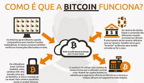
BITCOIN
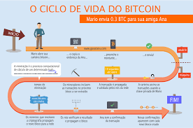
BITCOINBITCOINBITCOIN
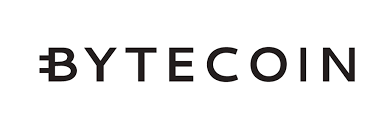
BYTECOIN
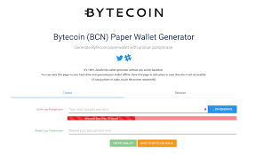
BYTECOIN
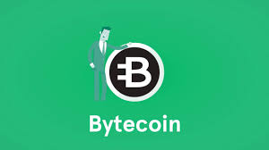
BYTECOIN
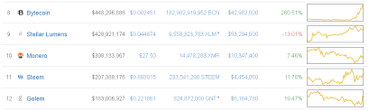
BYTECOINBYTECOIN
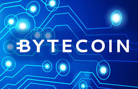
BYTECOIN
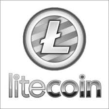
LITECOIN
LITECOINLITECOIN
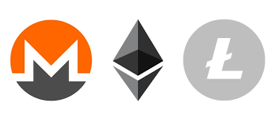
LITECOINLITECOIN
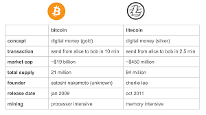
LITECOINLITECOIN
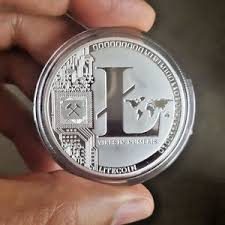
LITECOIN
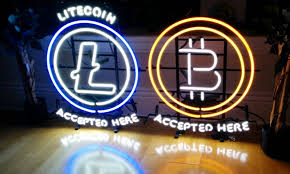
LITECOINMONERO
MONERO
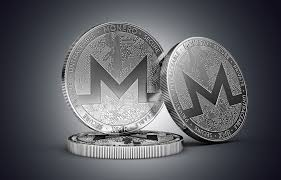
MONERO
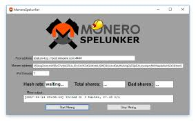
MONEROMONERO
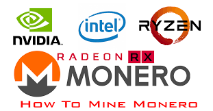
MONERO
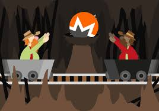
MONERO
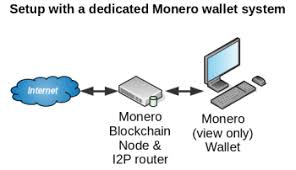
MONERO
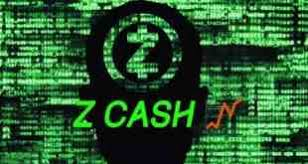
ZCASH
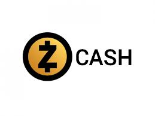
ZCASH
ZCASH
ZCASH
ZCASH
ZCASH |
© Copyright 2017 - 2030 All rights reserved.